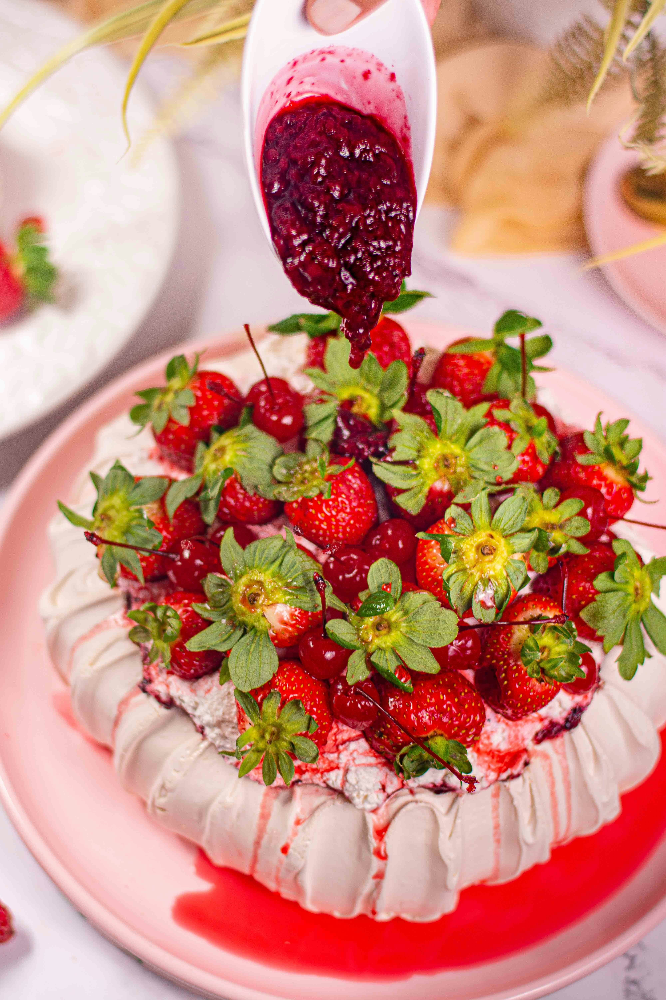

Bolo de Morango
O melhor bolo de morango para dar para sua namorada

Ingredientes
- 2 xícaras (chá) de açúcar
- 5 ovos
- 1 xícaras (chá) de maizena
- 2 xícaras (chá) de farinha de trigo
- 1 xícara (chá) de suco de laranja
- 1 colher de fermento em pó químico
- 300 g de morango (opcional), sem os morangos tambem fica muito gostoso
- 1 leite condensado
- 2 medidas da lata de leite
- 2 colheres de maizena
- 2 gemas
Modo de preparo
- Na batedeira bata os ovos e o açúcar por 10 minutos, junte o suco de laranja aos poucos sempre batendo.
- Agora acrescente o trigo e a maizena peneirados bem devagar e mexendo de baixo para cima com uma colher de pau ou um fuê.
- Por último o fermento.
- Asse por 25 a 30 minutos à 200°C.
Muito obrigado por escolher a minha receita
Voltar ao menu